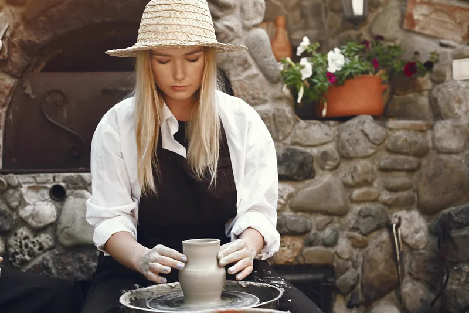
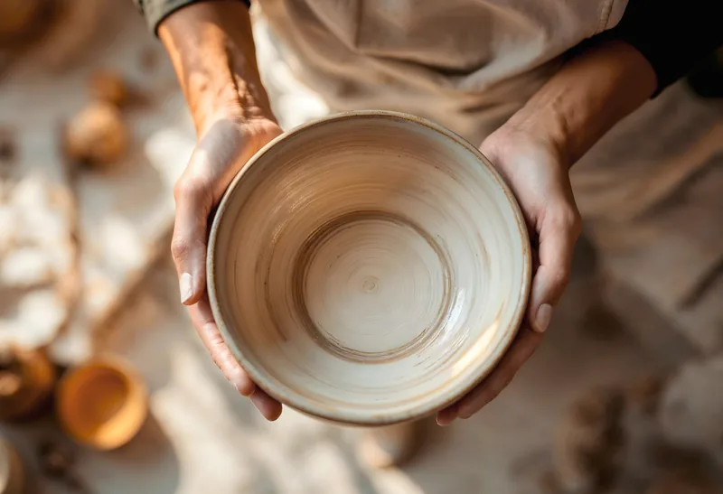
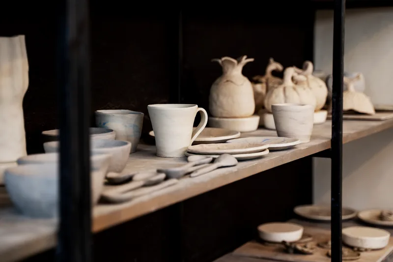
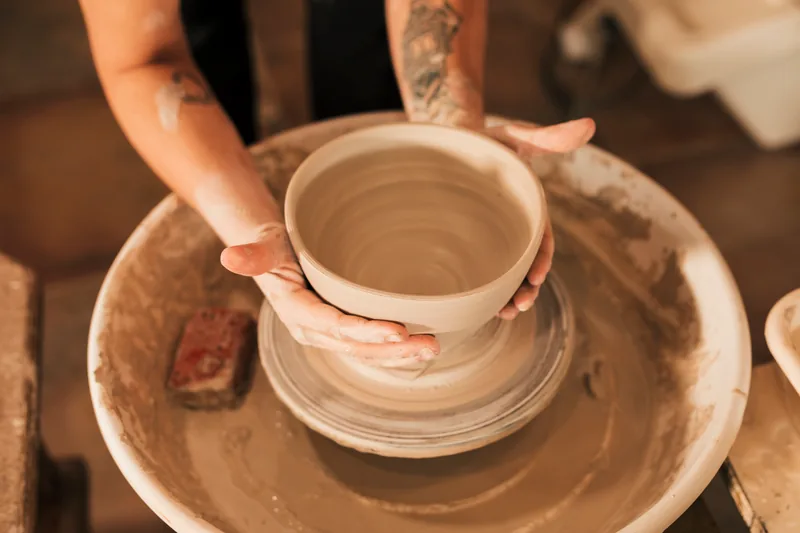
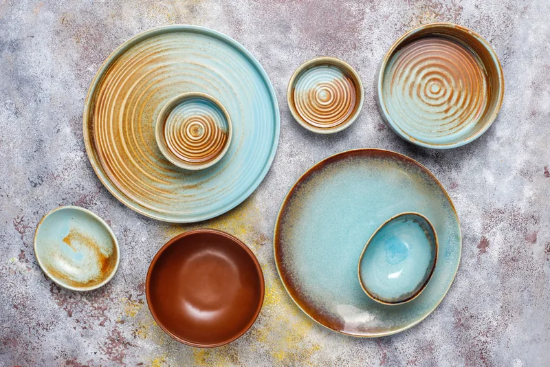
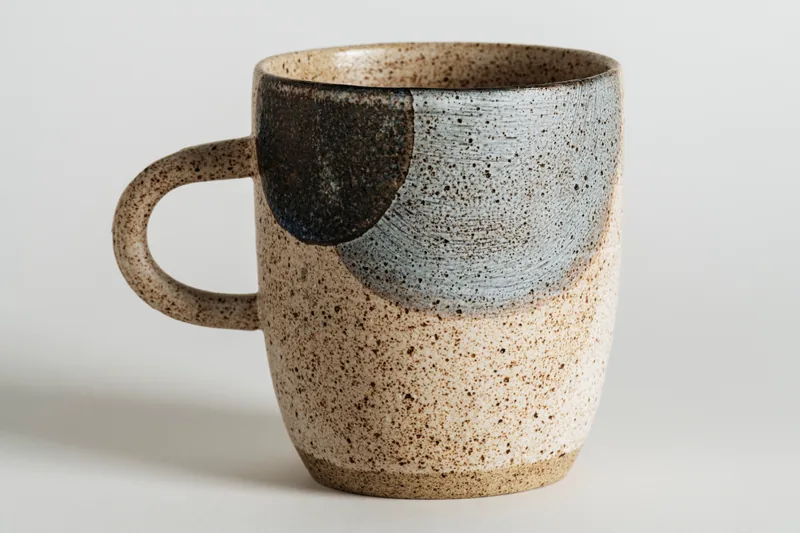
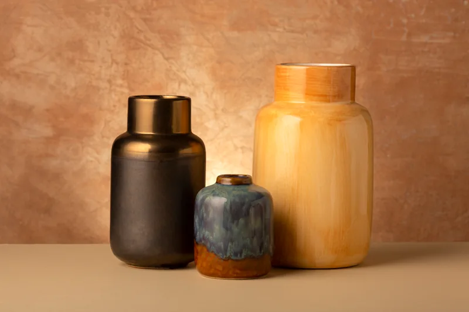
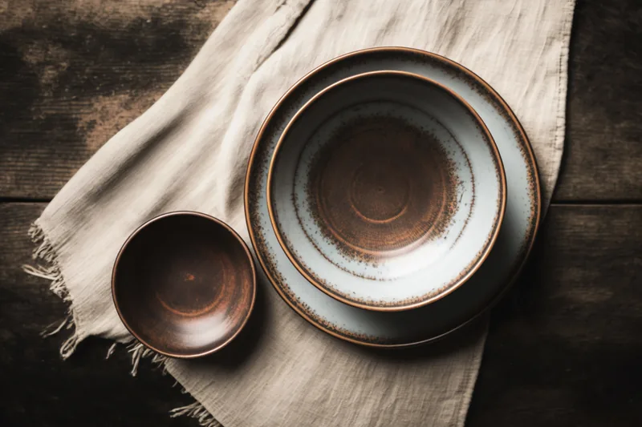
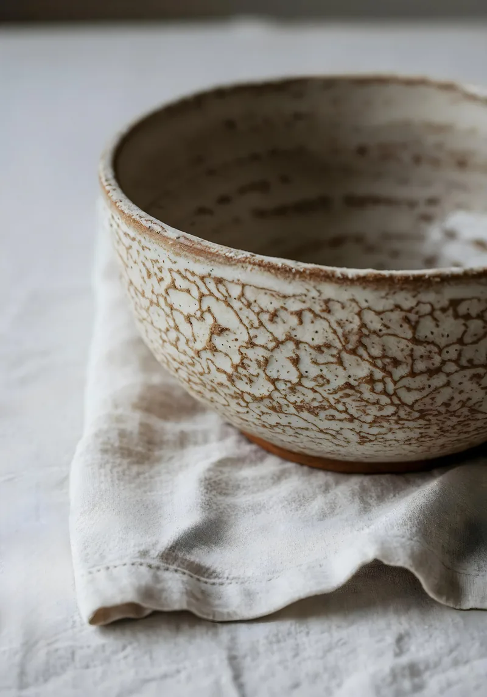
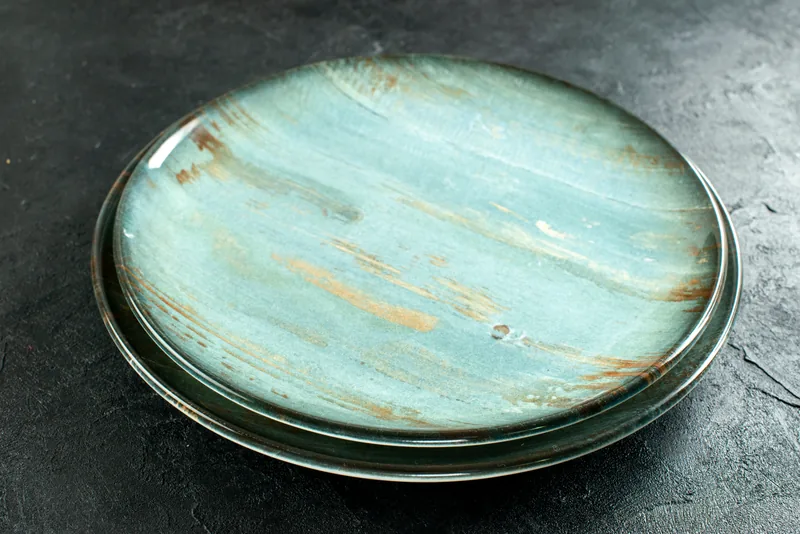

Ahol az ötleteid formát öltenek
Ismerd meg a műhelyt, ahol az alkotás öröme vár.
Fehér Dóra vagyok, az Agyagpad alapítója. Szentendrei műhelyemben megmutatom, hogyan válhat egy darab agyagból saját alkotás és személyes emlék. Barátságos környezetben, szakmai segítséggel, a saját tempódban ismerkedhetsz meg a kerámiakészítéssel.


Kíváncsiságból hivatás
Az alkotás szeretetét adom tovább.
2009-ben sajátítottam el a korongozás alapjait. Már az első alkalmakon magával ragadott, ahogyan az agyag minden apró mozdulatra reagál. Azóta is folyamatosan képzem magam, új formákkal és mázakkal kísérletezem.
Népi iparművészként olyan használati tárgyakat készítek, amelyeknek helyük van a mindennapokban. Egy kézbe simuló bögre vagy egy kedvenc tál számomra attól különleges, hogy használat közben válik igazán a történetünk részévé.
Az Agyagpadot azért hoztam létre, hogy ezt az örömöt másokkal is megoszthassam. Szeretem látni, ahogy a kezdeti bizonytalanságot felváltja a kíváncsiság, majd megszületik az első saját forma.
- szakmai tapasztalat
- 15+ év
- tanítvány
- 1500+
- alkotás
- 7000+
Nézz körül az Agyagpadban
Egy hely, ahol jó elidőzni.
Korongok, agyagos eszközök, száradó edények és kész kerámiák: a műhelyben minden az alkotás körül forog. Itt közelről is megismerheted, hogyan lesz a puha agyagból formázás, szárítás és égetés után használható tárgy.
A foglalkozásokra előkészítem az alapanyagokat és az eszközöket. Érkezz kényelmes ruhában, amelyen egy kis agyagfolt sem gond, és engedd meg magadnak, hogy egy időre csak arra figyelj, ami a kezed alatt formálódik.


Nem kell elsőre tökéletesnek lennie
Az első mozdulatoktól melletted vagyok.
Bátran kezdhetsz bele.
Nem szükséges előképzettség. Megmutatom az alapokat, és segítek, amikor elakadnál.
Jut idő a kérdéseidre.
A kezdő foglalkozásokon legfeljebb hatan alkotunk, így mindenkire jut személyes figyelem.
A saját tempódban haladhatsz.
Van helye a próbálkozásnak és az újrakezdésnek. Nem kell másokhoz mérned a munkádat.
A műhelyből a mindennapokba
Kézzel készült, használatra szánt kerámiák.
Bögrék, tálak, tányérok és vázák: olyan tárgyakat készítek, amelyek nemcsak a polcon mutatnak jól, hanem öröm használni őket. A formákon és a mázak apró eltérésein ott marad a kézi munka nyoma, ettől mindegyik darab egy kicsit más.












Most rajtad a sor.
Kipróbálnád, milyen érzés agyagból alkotni? Akár egyetlen alkalomra érkeznél, akár hosszabban ismerkednél a korongozással, segítek megtenni az első lépéseket.